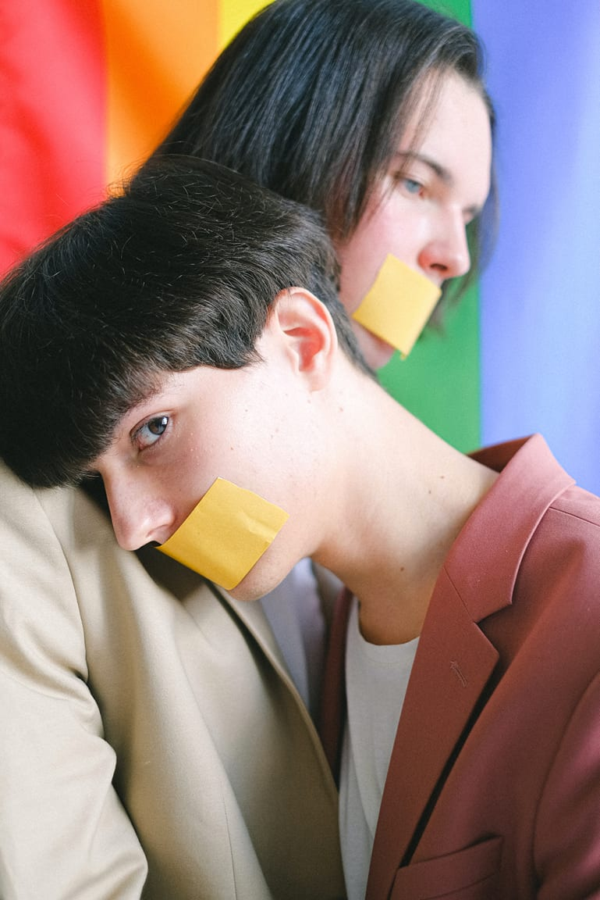
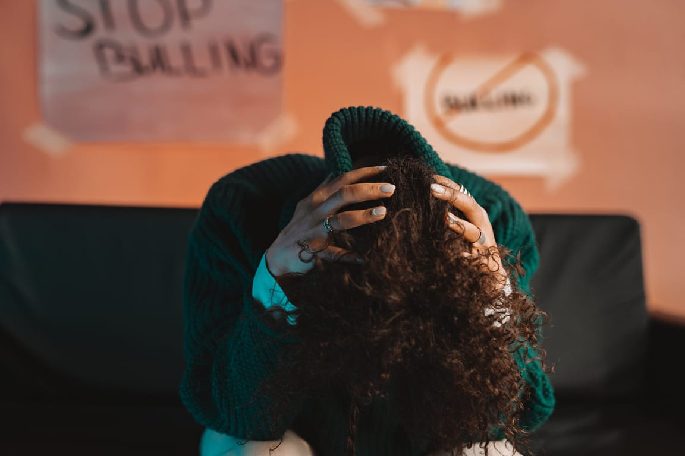

Racial Culture discrimination is one of the biggest problems around the world. It is when someone is prejudiced
based on their race, culture, and religion. Discrimination is such a toxic issue that exists in every country. It
also seems like an international behavior of human beings worldwide. During the Pandemic, there was an increased
number of cases of discrimination worldwide. According to Boutwell et al. (2017), the frequency that respondents
claim of experiencing discrimination in their daily lives (about 75 percent). Individual responses are from across
racial categories, with the same pattern of discriminating encounters across the board. The majority of racial and
ethnic groups covered in the data reported experiencing discrimination regularly or irregularly. This kind of
treatment towards someone makes them struggle and suffer, often bringing them into anxiety or depression. If ever,
we should avoid discrimination because it does not bring positivity. It is never healthy and can't be beneficial
for holistic growth and well-being.
In society, especially in the Philippine setting, it is sad how most people living at the periphery and under the
lowest economic sector also experiences varied episodes of prejudice and discrimination. It's quite an ironic
reality when differences amongst people should bring peace and unity. Instead, it serves as a driving force for
some to judge and belittle others. Often, those who were discriminated against ends-up being anxious and
depressed. They are belittled and can't find the courage to fight back and speak for themselves. Discrimination is
a form of bullying. Racial discrimination is more specific to all of the unfair treatment and wrong judgments
about who you are as a person relative to your race. Imagine being treated less favorably than other people. It
could be very toxic and deteriorating.


Some indigenous people and our Muslim sisters and brothers are against the local setting because of their colors,
physical appearance, and accent. In some scenarios, they are judged and criticized for speaking and how they
express their culture. It is also painful to hear people cry because society makes them feel different,
unfortunate, and unequal.
Example of Racial Discrimination in the Workplace
Racial Discrimination? Know your Rights
The best key to fighting against racial discrimination is understanding our worth, living to our rights in
society, and embracing who we are as a person. Regardless of the situation, it is our prerogative never to let
anyone get the opportunity to belittle and discriminate against you in any aspect. The video reminds us that we
need to fight for our rights. We should not stay silent all the time and never let other people silence our
voices. Sometimes battles are not just in the war zone. Instead, it occurs in our daily endeavors as we strive
towards freedom and peace as human beings.
"PRW|EJUDICE is a far greater problem than any impairment; Discrimination is a bigger obstacle to
overcome than any disability." -Paul K. Longmore